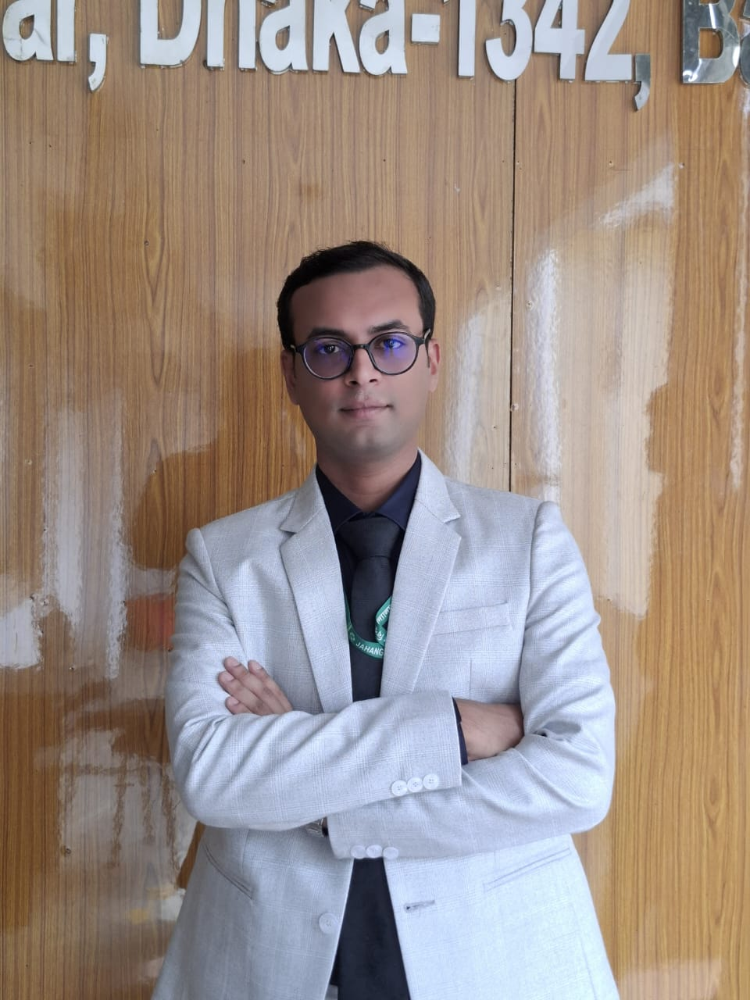

B.Sc. in Information Technology
Institute of Information Technology (IIT), Jahangirnagar University. CGPA 3.82 up to the 4th semester.
Open to AI/ML internship opportunities
AI/ML Engineer
I develop machine learning and deep learning models and deliver them as practical applications, so that ordinary people can use them in daily life and researchers can build on them.

I am an undergraduate student at the Institute of Information Technology (IIT), Jahangirnagar University, with a CGPA of 3.82 up to the fourth semester. I have worked with machine learning and deep learning models for two years.
My focus is to build models and deliver them in a form that ordinary people can use in real life and that supports research. HealthBridge, a completed platform that connects IoT ECG hardware with deep learning for disease prediction, is an example of this approach.
Alongside modelling, I develop and deploy back-end services and integrate hardware for real-time data acquisition.
Institute of Information Technology (IIT), Jahangirnagar University. CGPA 3.82 up to the 4th semester.
Jahangirnagar University School & College. GPA 5.00. Physics 97%, Chemistry 97%, Mathematics 97%.
Jahangirnagar University School & College. GPA 5.00. Mathematics 96%, Higher Math 95%, Physics 93%, Chemistry 93%.
An ongoing structured course in artificial intelligence and machine learning.
In progressCore ML workflow: models, validation and underfitting vs. overfitting.
Pipelines, missing values, categorical data and cross-validation.
Verified certification in foundational Python and coding skills.
Relational database design and query optimization.
Solved 450+ problems on Codeforces and LeetCode with C++ and Python. Peak Codeforces rating: 1182.
A full-stack clinical intelligence platform that connects biomedical hardware with AI-driven analysis. It acquires ECG signals in real time, predicts cardiac conditions and general health risks, and gives patients and doctors a shared dashboard.
An AI-powered rice leaf analysis platform that helps farmers assess paddy leaves from a photograph. A two-stage deep learning pipeline first confirms that the image shows a paddy leaf, then classifies it as Bacterial, Fungal, Viral or Healthy.
A batch-wise academic portal for the Institute of Information Technology, Jahangirnagar University. Administrators publish technical projects, and students browse and search the department’s academic work in one place.
A Java desktop application for reporting, tracking and resolving campus issues. Students raise issues with the relevant authority, such as a residential hall, a department or campus security, and receive official responses within the system.
A hardware-based smart door security system developed as a Digital Logic Design course project. It uses dual-factor authentication to control door access and raises an alert on unauthorized entry attempts.
More work, including deep learning projects, an AI code debugger and a weather app, is on my GitHub.
Work that is currently in progress.
ArogyoAI is an AI-powered clinical decision support platform for preliminary screening and risk assessment, designed to assist patients and healthcare professionals in Bangladesh. It supports doctors rather than replacing them, and every output is intended for physician validation.
Open to AI/ML internships, research collaboration and software engineering opportunities.